Decision Diagram と CL-CUDD の紹介
浅井 政太郎
東京大学大学院 総合文化研究科 福永研究室 D2
1 注意
今日の発表はいろいろなヒトの発表を借りて切り貼りしています
- 『フカシギの数え方』 おねえさんといっしょ！ みんなで数えてみよう！
- ZDD とフロンティア法 2017年版 ver 0.1 奈良先端科学技術大学院大学 川原 純
- ZDDを用いたパスの列挙と索引生成 川原 純 (JST ERATO 研究員)
- ICAPS2012-Tutorial Decision Diagrams in Discrete and Continuous Planning (Scott Sanner)
- AAAI2016-Tutorial Symbolic Methods for Probabilistic Inference, Optimization, and Decision-making (Scott Sanner)
- ICAPS2016-Tutorial Decision Diagrams for Discrete Optimization (John Hooker CMU)
2 Decision Diagram とは 4min
「『フカシギの数え方』 おねえさんといっしょ！ みんなで数えてみよう！」で紹介されないデータ構造
二倍速で見ましょう
3 今日のお話
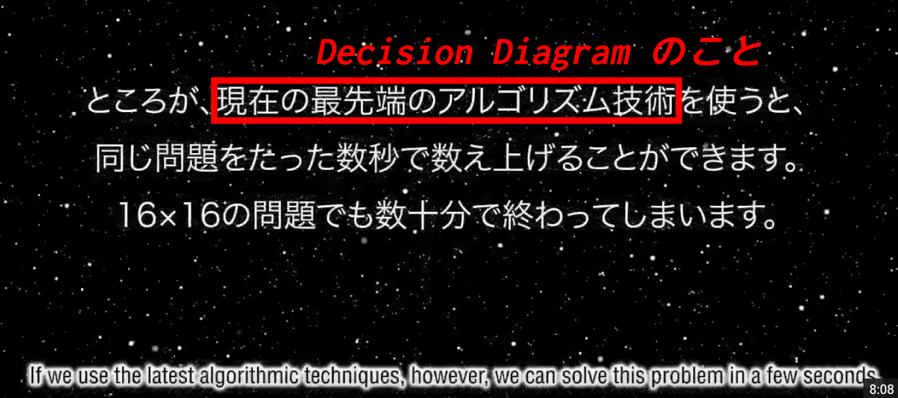
- これをCLから扱うライブラリを紹介
4 Decision Diagrams (DDs)
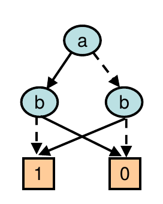
- 決定木(Decision Tree) のグラフ版
- 関数をコンパクトに表現できる:
- \(B = \{0, 1\}\)
- \(f: B^n \rightarrow B\) : BDD,ZDD
- \(f: B^n \rightarrow R\) も可能 (ADD)
4.1 XOR関数を線形サイズで保持できる
Treeでは指数サイズのノードが必要。
AND と OR は DDでもTreeでも線形。
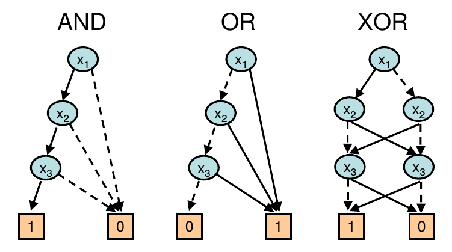
4.2 Boolean Function を表現してみる (真理値表)
| \(a\) | \(b\) | \(c\) | \(F(a,b,c)\) |
|---|---|---|---|
| 0 | 0 | 0 | 0 |
| 0 | 0 | 1 | 0 |
| 0 | 1 | 0 | 0 |
| 0 | 1 | 1 | 1 |
| 1 | 0 | 0 | 0 |
| 1 | 0 | 1 | 1 |
| 1 | 1 | 0 | 0 |
| 1 | 1 | 1 | 1 |
- 真理値表を使えば出来る
- 動くけど、もっとコンパクトに出来る
4.3 Boolean Function を表現してみる (木/Decision Tree)
ノードごとにTrue/Falseかで進む枝が決まる
表よりコンパクト
| \(a\) | \(b\) | \(c\) | \(F(a,b,c)\) |
|---|---|---|---|
| 0 | 0 | 0 | 0 |
| 0 | 0 | 1 | 0 |
| 0 | 1 | 0 | 0 |
| 0 | 1 | 1 | 1 |
| 1 | 0 | 0 | 0 |
| 1 | 0 | 1 | 1 |
| 1 | 1 | 0 | 0 |
| 1 | 1 | 1 | 1 |
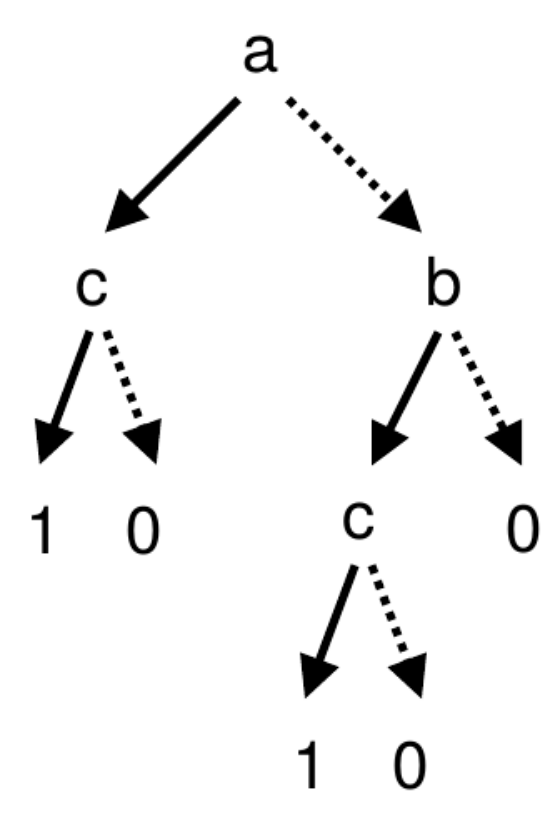
4.4 Boolean Function を表現してみる (木/Decision Tree)
でもまだ無駄な重複がある
| \(a\) | \(b\) | \(c\) | \(F(a,b,c)\) |
|---|---|---|---|
| 0 | 0 | 0 | 0 |
| 0 | 0 | 1 | 0 |
| 0 | 1 | 0 | 0 |
| 0 | 1 | 1 | 1 |
| 1 | 0 | 0 | 0 |
| 1 | 0 | 1 | 1 |
| 1 | 1 | 0 | 0 |
| 1 | 1 | 1 | 1 |
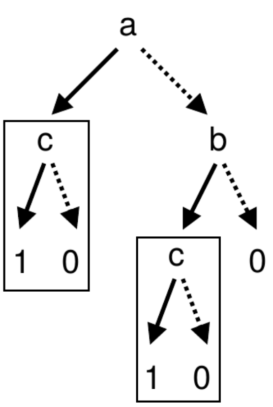
4.5 Boolean Function を表現してみる (グラフ/Decision Diagram)
重複を共有してグラフにしよう!
| \(a\) | \(b\) | \(c\) | \(F(a,b,c)\) |
|---|---|---|---|
| 0 | 0 | 0 | 0 |
| 0 | 0 | 1 | 0 |
| 0 | 1 | 0 | 0 |
| 0 | 1 | 1 | 1 |
| 1 | 0 | 0 | 0 |
| 1 | 0 | 1 | 1 |
| 1 | 1 | 0 | 0 |
| 1 | 1 | 1 | 1 |
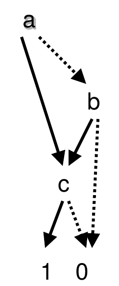
4.6 Decision Diagram 定義
node :: (index, then, else)
then 枝: index 番目のboolean引数がtrue の時にたどる枝 (1-枝, true枝)
else 枝: index 番目のboolean引数がfalse の時にたどる枝 (0-枝, false枝)
ハッシュテーブルでノードを管理
→同じindex と 子ノード を持つノードは1つしか存在しない (キャッシュされる)
かつ、グラフ上で常にindexが降順で現れる (Ordered DD)
4.7 関数同士の演算を高速に行える
- 関数同士の演算(代数系)
- BDD: \(\neg f, f\land g, f\lor g\)
- ZDD: \(f \setminus g, f\cap g, f\cup g\)
- ADD: \(-f, f\oplus g, f\otimes g, \max (f,g)\)
- コンパクトなまま効率的に計算できる
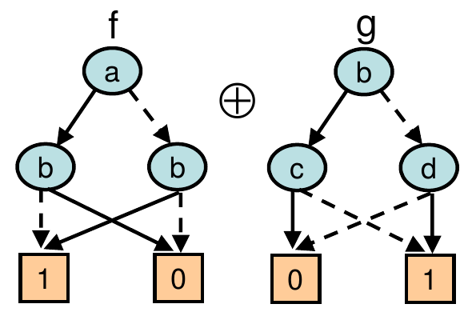
4.8 縮約規則
DD に縮約規則をつけることでさらにコンパクトに出来る
1-枝と0-枝が同じノード を削除 ← 出力に影響を与えない 無駄なノード だから
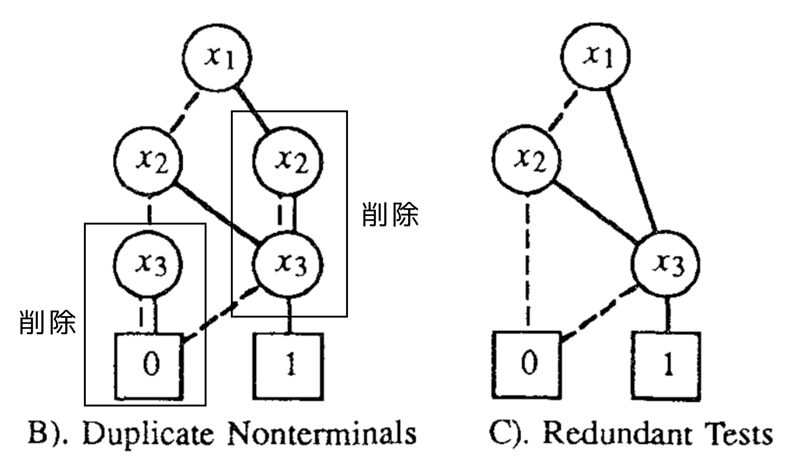
正式には Ordered BDD (OBDD) == DD + 縮約規則 + 変数順序
Ordered でないBDDを使うことはまれなので, BDDといえば普通OBDD
4.9 BDD 同士の演算: Apply
2つのBoolean関数fとgの論理和/論理積などをとることができる
\((f\, R\, g)(x) = f(x)\, R\, g(x),\, x = (x_0,x_1,\ldots)\) のとき (\(R=\land,\lor,\ldots\))、
\[ f\, R\, g = \text{BDD}(i,\quad f_{x_i=1}\, R\, g_{x_i=1},\quad f_{x_i=0}\, R\, g_{x_i=0}) \]
ただし \(i\) は \(f,g\) のルートノードのindex
\(f\, R\, g = \text{Apply}(f,g,R)\) と書くと、 Apply は再帰的に定義可能。
(defun apply (f g op) (match* (f g) (((bdd index1 then1 else1) (bdd (= index1) then2 else2)) (make-bdd :index index1 :then (apply then1 then2 op) :else (apply else1 else2 op))) ...(indexが違う場合など)... ...(leaf node の場合など)... ))
4.10 用途: 自動定理証明、回路の検証、自動プログラム検証 (Formal Methods, Verification)
指数的に多い要素を「並列に」操作できる
→ 全ケースを余すこと無く検査できる
注: ここでいう「並列」は、「多数の要素をまとめて処理」ぐらいの意味
並列計算機を走らせることとは関連は無い (が、その意味の並列化も可能)
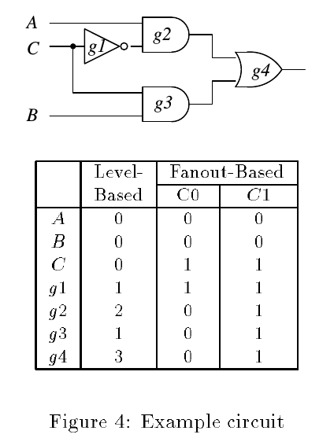
5 BDDの問題点
BDD は論理関数を表現するのには良いが、ある種類の関数が得意でない
集合族: \(F=\{\{a,b\}, \{a,c\}, \{c\}\}\) — をBDDで表してみる
関数 \(f(x_0,x_1,x_2)\) :
例: \(S=\{a,b\}\) は Fに含まれているか?
集合 \(S\) が 集合族\(F\) に含まれれば \(f=1\), 含まれなければ \(f=0\)
引数 \(x_0,x_1,x_2\): 各要素 \(a,b,c\) が \(S\) に入力に含まれていれば1,含まれていなければ0.
\(f(1,1,0) = 1\), 従って \(S \in F\)
5.1 実際にやってみると…
左は いまいち小さくならない 。
- → これを改良したのが右の ZDD
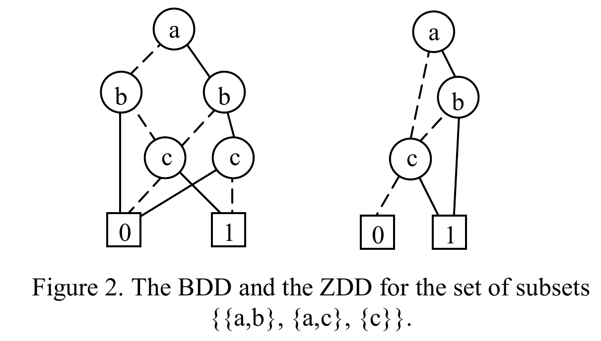
5.2 別の縮約規則: Zero-suppressed Decision Diagram (ZDD)
BDD: 同じなら削除
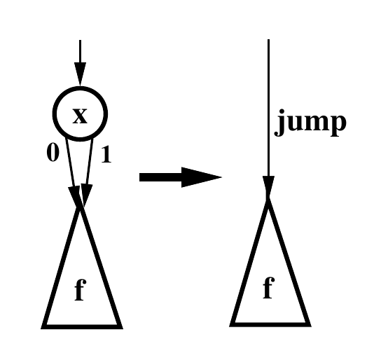
ZDD: 1-枝が0なら削除
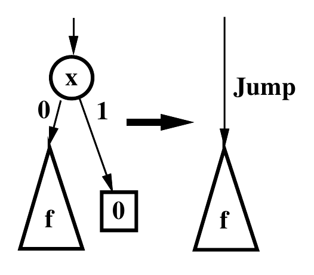
5.3 同じ関数でもzddのほうが小さいのは…
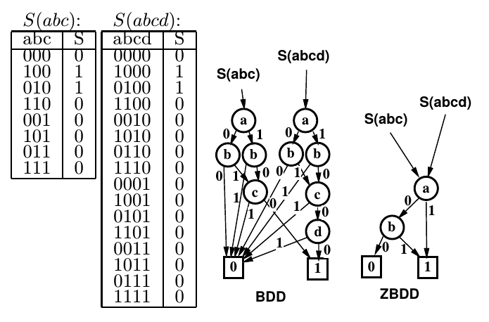
- 理由: 殆どの場合で関数の値が0 だから
- → 0と1の割合が同じぐらいの時はbdd, 0が多い場合にはzddが良い
6 ZDD は使える
0が多い場合にはzddが良い
- 最悪指数時間の問題を動的計画法で解く場合…
- 空間全体 のうち 使う空間 はほんの少しなので…
- 保持すべきデータをzddに貯めれば 殆ど0
- BDD より ZDD が速いはず!
- 指数的に速いアルゴリズムを書くのに役立つハズ ≠ 定数倍の高速化
6.1 例えば… (ERATOのスライドを借用)
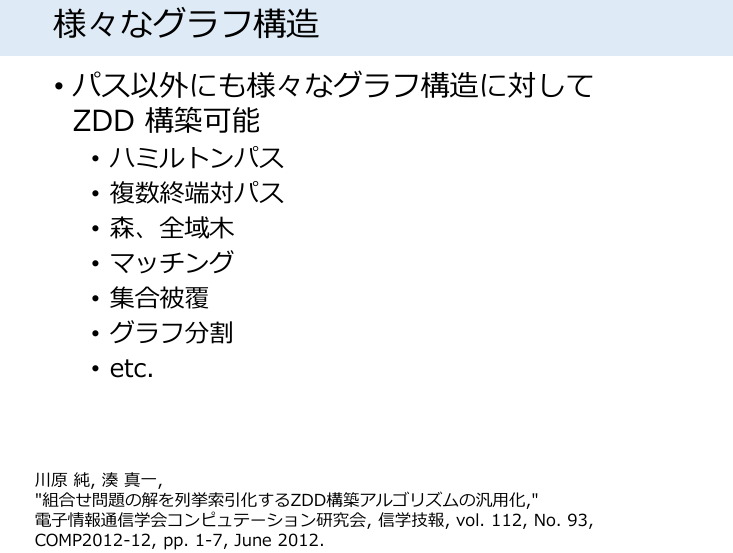
ZDD とフロンティア法 2017年版 ver 0.1 奈良先端科学技術大学院大学 川原 純
6.2 例えば… (ERATOのスライドを借用)
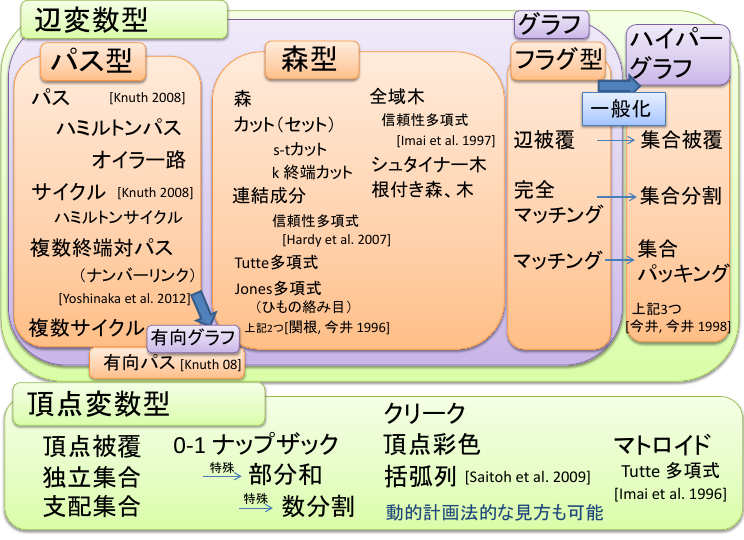
ZDD とフロンティア法 2017年版 ver 0.1 奈良先端科学技術大学院大学 川原 純
6.3 例えば… (ERATOのスライドを借用)
ZDD とフロンティア法 2017年版 ver 0.1 奈良先端科学技術大学院大学 川原 純
6.4 例えば… (ERATOのスライドを借用)
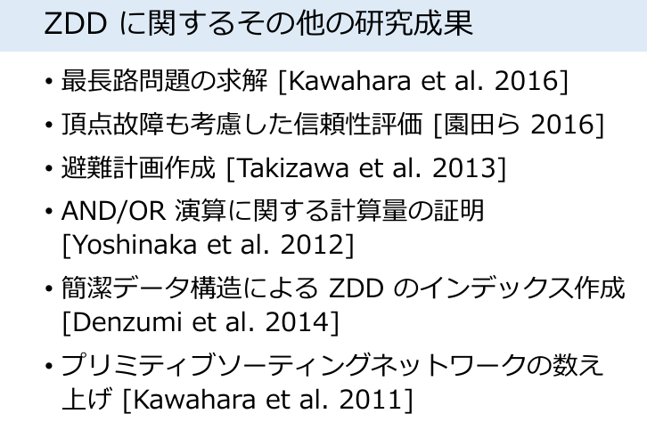
ZDD とフロンティア法 2017年版 ver 0.1 奈良先端科学技術大学院大学 川原 純
6.5 ZDDとBDDでは扱うApply操作が違う
BDD: 論理操作 — \(\neg f, f\land g, f\lor g\)
ZDD: 集合操作 — \(f \setminus g, f\cap g, f\cup g\)
互換性はそこまでではない アルゴリズムも別に作らないといけない
7 本題: BDD/ZDDをLispから使うためのライブラリ
BDD は沢山のライブラリがある
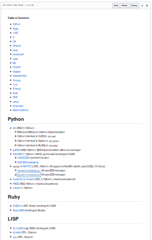
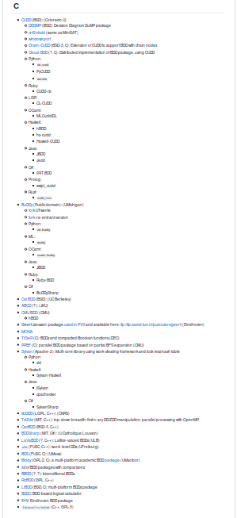
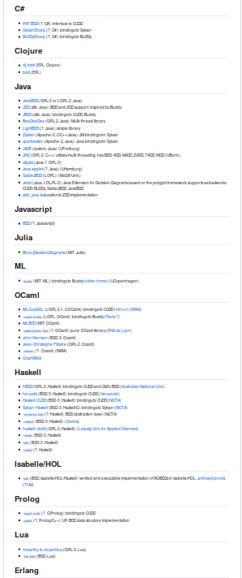
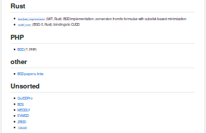
7.1 そのうち、ZDD に対応するのはあまり多くない
- CUDD: 大御所, Cのライブラリ
- SapporoBDD, TdZdd (Graphillionの内部): ERATO が作ったC/Pythonライブラリ,
- ほか数件だけ, つまりZDDはあまりまだ注目されていない
- CUDD へのCFFIバインディング: CL-CUDD が存在
- → zdd対応なし, CLOS(遅い), Quicklisp登録なし, テスト無し, Tutorial無し、 CUDDを自分でビルドしてインストールする必要あり, 最新版のCUDDに対応せず。
- 自分がやったこと: ココらへんを整備して、 これで何かを作れることを実証する こと。
8 Mate-ZDD
おねえさんのパス数え上げ問題を解くためのアルゴリズム
Don Knuth の Simpath アルゴリズムをピュアZDDで書き直した、シンプルだが遅いバージョン
これをCL-CUDDを使って実装した
https://github.com/guicho271828/simpath
デモ
川原 et al. 数理解析研究所講究録 第 1744 巻 2011 年 35-41 ZDD によるパスの列挙
9 Future Work
自分の専門である 自動行動計画ソルバ(プランナ)をZDDで作る
- 配列ベースの普通の手法に比べた利点:
- よりスケールする(大きな問題が解ける)
- メモリ使用量が削減できる
- 探索の情報を圧縮して保持できるから
- 細かなループの中のチューニングを気にしなくて良い
- ZDDが複数の状態をまとめて処理するから
- よりスケールする(大きな問題が解ける)
9.1 BDDベースのプランニングアルゴリズムは存在する:
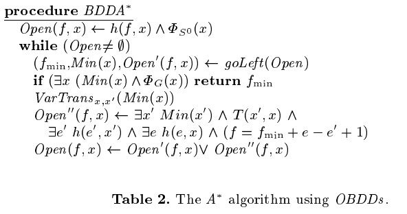
BDDよりZDDのほうがよいハズ
← 指数爆発している全空間に比べ、実際に使われる空間サイズは小さいから
9.2 International Planning Competition 2014 で優勝
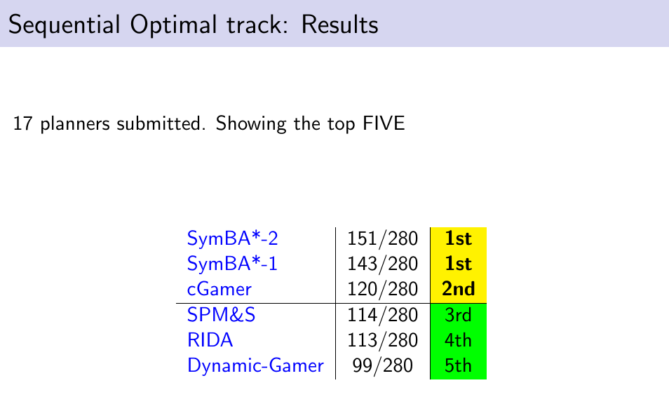
9.3 強い
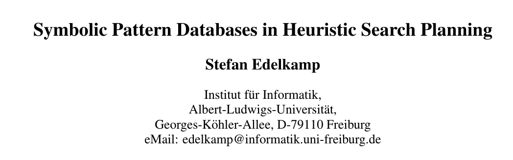
コレに勝つ!
10 まとめ
BDD, ZDD を概説
CL-CUDD をまともに使える状態にした
ZDDでお姉さん問題を解くソルバを作った
プランニングに応用したい
福永研はAIやりたい新規学生募集中! metahack.org
Lisper歓迎, 教授もlisper